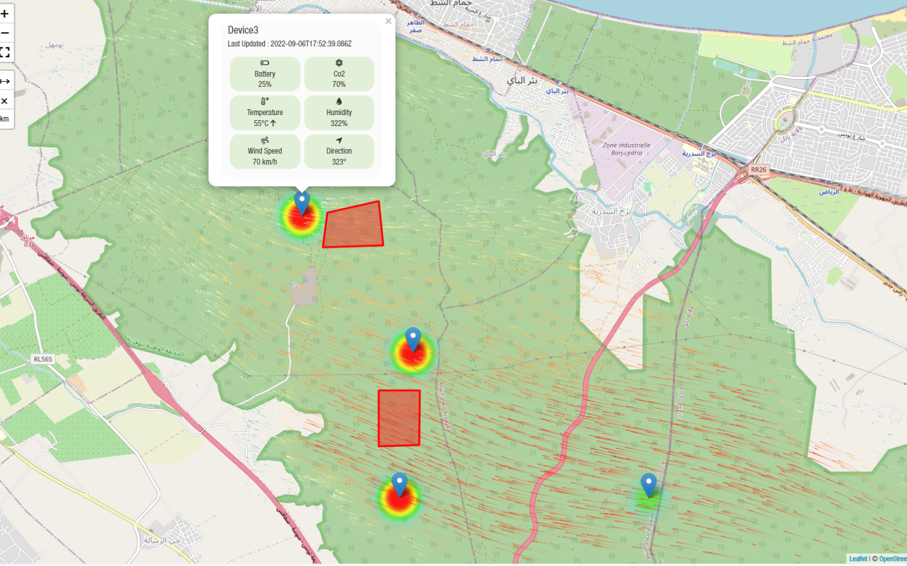
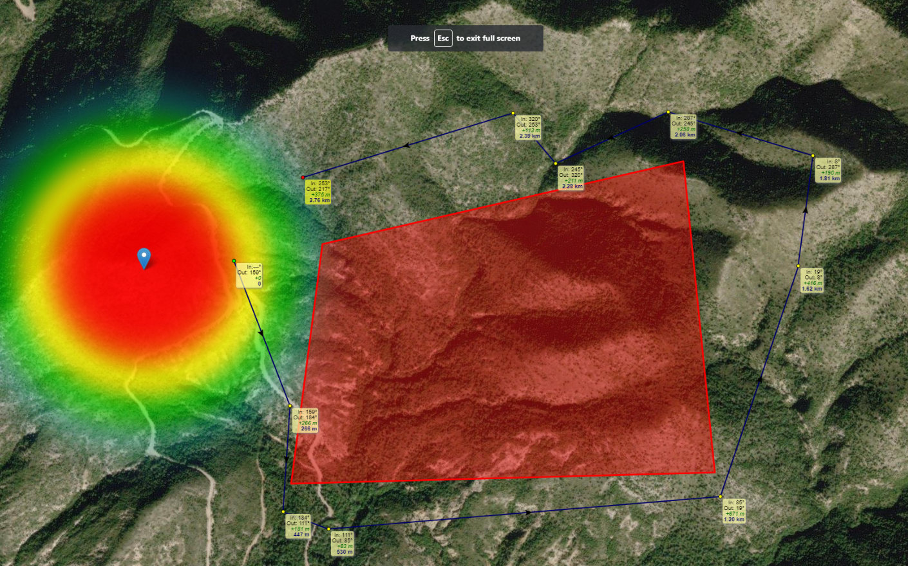

<div id="ajax-page" class="ajax-page-content">
    <div class="ajax-page-wrapper">
        <div class="ajax-page-nav">
            <div class="nav-item ajax-page-prev-next">
                <a class="ajax-page-load" href="nexaminds.html"><i class="lnr lnr-chevron-left"></i></a>
                <a class="ajax-page-load" href="sales-dashboard.html"><i class="lnr lnr-chevron-right"></i></a>
            </div>
            <div class="nav-item ajax-page-close-button">
                <a id="ajax-page-close-button" href="#"><i class="lnr lnr-cross"></i></a>
            </div>
        </div>

        <div class="ajax-page-title">
            <h1>FireFlow</h1>
        </div>

        <div class="row">
            <div class="col-sm-8 col-md-8 portfolio-block"><div  id="loader" style="display: flex; justify-content: center; align-items: center; height: 100vh;">
                    
                </div>
                <div class="owl-carousel portfolio-page-carousel fullImage" id="images-carousel">
                    <div class="item">
                        
                    </div>
                    <div class="item">
                        
                    </div>
                    <div class="item">
                        
                    </div>
                </div>

                <div class="portfolio-page-video embed-responsive embed-responsive-16by9">
                    <iframe width="560" height="315" src="https://www.youtube.com/embed/gpI5CX1Xfk4" title="YouTube video player" frameborder="0" allow="accelerometer; autoplay; clipboard-write; encrypted-media; gyroscope; picture-in-picture; web-share" allowfullscreen></iframe>

                </div>

                <script src="https://unpkg.com/imagesloaded@5/imagesloaded.pkgd.min.js"></script>
                <script type="text/javascript">
                    jQuery(document).ready(function($){
                        // Show the loader
                        // $('#loader').show();

                        $('#images-carousel').imagesLoaded()
                                .done( function( instance ) {
                                    // Hide the loader when all images are loaded
                                    $('#loader').hide();
                                    $('.portfolio-page-carousel').owlCarousel({
                                        smartSpeed:1200,
                                        items: 1,
                                        loop: true,
                                        dots: true,
                                        nav: true,
                                        navText: false,
                                        margin: 10,
                                        autoHeight:true
                                    });
                                })
                                .fail( function() {
                                    console.log('all images loaded, at least one is broken');
                                })
                    });
                </script>
            </div>

            <div class="col-sm-4 col-md-4 portfolio-block">
                <!-- Project Description -->
                <div class="project-description">
                    <div class="block-title">
                        <h3>Description</h3>
                    </div>
                    <ul class="project-general-info">
                        <li><p><i class="fa fa-user"></i> Anas Chaibi | Omar Gassab | Ines Bessrour | Omar Hammami | Arij Saleh | Iyed Dhahri</p></li>
                        <li><p><i class="fa fa-calendar"></i> Jul 2022 - Oct 2022 </p></li>
                        <li><p><i class="fa fa-newspaper"></i> Press</p>

                            <p><a target="_blank" href="https://africanmanager.com/avec-les-jeunes-pousses-la-technologie-de-demain-est-deja-la/">African Manager</a></p>
                            <p><a target="_blank" href="https://www.ilboursa.com/marches/les-laureats-de-la-12e-edition-de-lorange-summer-challenge_37116">Il Boursa</a></p>
                            <p><a target="_blank" href="https://www.businessnews.com.tn/ceremonie-de-remise-des-prix-de-la-12e-edition-dorange-summer-challenge,520,123560,3">Business News</a></p>

                        </li>

                    </ul>

                    <p class="text-justify">
   
            <b>FireFlow: An IoT Node Network for Fire Risk Assessment and Prediction</b>
            <p>
            <b>Project Presentation:</b>
            <a href="https://www.canva.com/design/DAFO8Fb2Gqs/Wn26_78Id4SS_TrtPOc_7Q/view?utm_content=DAFO8Fb2Gqs&utm_campaign=designshare&utm_medium=link&utm_source=editor" 
            target="_blank">Presentation | Fireflow OSC 2022</a>
            </p>
            <p>
                <b>Project Pitch:</b>
                <a href="https://youtu.be/Wnq41pJWal0?si=P9piqQLxW9ws9uLc" target="_blank">Youtube | Fireflow Pitch OSC 2022</a>
            </p>
            <p>
            FireFlow is an innovative cross-platform solution designed to assist firefighters in detecting and controlling forest fires. This IoT network evaluates and predicts fire risks across forests and mountains. The system encompasses a network of connected nodes strategically placed at critical coordinates, each equipped with a weather station and a set of sensors.
            </p>
            <p>
            The solution also provides a platform that displays fire locations in real-time on an interactive thermal map.
            </p>
            <p>
            The system also includes an AI model that predicts the direction and shape of fire spread, enhancing strategic planning and response effectiveness.
            </p>
            <p>
            The solution also provides a platform that displays fire locations in real-time on an interactive thermal map.
            </p>
            <b>Key Contributions:</b>
            <ul>
            <li><b>Cross-Platform Solution Development:</b> Led a team through the complete development cycle, from initial design thinking to creating a functional prototype, effectively managing the project from concept to execution.</li>
            <li><b>RESTful Services and APIs:</b> Designed and developed efficient and scalable RESTful services and APIs, focusing on robust back-end functionalities.</li>
            <li><b>Comprehensive Web Platform Development Using MERN Stack:</b>
            <ul>
            <li><b>Interactive Maps:</b> Utilized Leaflet for real-time monitoring and display of fire locations on an interactive thermal map.</li>
            <li><b>Device Management Portal:</b> Developed a straightforward portal for controlling and managing installed IoT devices.</li>
            <li><b>Notification System:</b> Implemented alerts using Firebase to notify users of sudden environmental changes like wind direction shifts.</li>
            <li><b>AI-Driven Fire Prediction:</b> Integrated an AI model to predict the direction and shape of fire spread, enhancing strategic planning and response effectiveness.</li>
            </ul>
            </li>
            <li><b>Collaboration and Design Insight:</b> Worked closely with UX teams on design aspects and gained insights into mechanical-electrical design alongside technical teams, enhancing the understanding of various protocols and technologies.</li>
            <li><b>Multidisciplinary Training:</b> Participated in comprehensive training conducted by experts from Orange, EY, and Google, broadening my technical and professional expertise.</li>
            </ul>
            

                    <!-- /Project Description -->

                    <!-- Technology -->
                    <div class="tags-block">
                        <div class="block-title">
                            <h3>Technology</h3>
                        </div>
                        <ul class="tags">
                            <li><a>React</a></li>
                            <li><a>Node</a></li>
                            <li><a>Express</a></li>
                            <li><a>MongoDb</a></li>
                            <li><a>Redux</a></li>
                            <li><a>Bootstrap</a></li>
                            <li><a>MQTT</a></li>
                            <li><a>ESP32</a></li>
                            <li><a>Arduino</a></li>
                            <li><a>BigQuery</a></li>
                            <li><a>TensorFlow</a></li>
                            <li><a>Vertex AI</a></li>
                            <li><a>Firebase</a></li>
                        </ul>
                    </div>
                    <!-- /Technology -->

                </div>
                <!-- Project Description -->
            </div>
        </div>
    </div>
</div>
